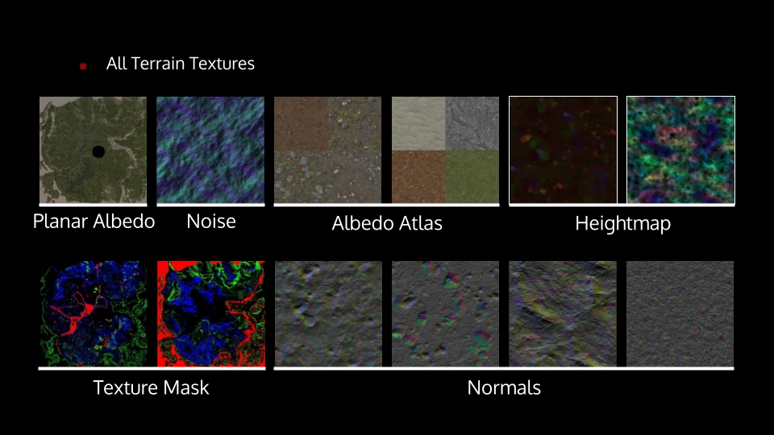

Technical Art
Shaders, visual effects and real-time environments.
Studio Experience
Technical Artist Intern
- Integrated assets into Monster Legends.
- Built an indexed VFX library and assembled scenes for Two Dots.
- Adapted a Photoshop library connected to ComfyUI so the entire art team could use it.
- Documented all of these workflows for the team.
VFX & Shaders
Scene Color, Depth Texture & Fresnel
Shield Shader
Render Textures & Vertex Shaders
Portal Shader
Snow Shader
VFX
Animated VFX
Modular Environment
Lighting
Animation
Scene Animation
Character Movement
Postgraduate Technical Art Research · 2025
The Forest - Decompilation
I decompiled The Forest to study how a Unity open-world game manages assets and renders a frame. I inspected game assets with Unity Asset Bundle Extractor and tested my findings against GPU captures in RenderDoc.
- Terrain materials. Analysed texture atlases, masks packed into RGBA channels and two-channel normal maps. Rebuilt a terrain material in Substance Designer to test how those textures worked together.
- GPU rendering. Traced the deferred rendering buffers and post-processing passes, and examined how vegetation and UI were batched into draw calls.
- Open-world optimisation. Investigated mesh levels of detail, frustum culling and how the game loads terrain chunks and cave scenes as players move through the world.
